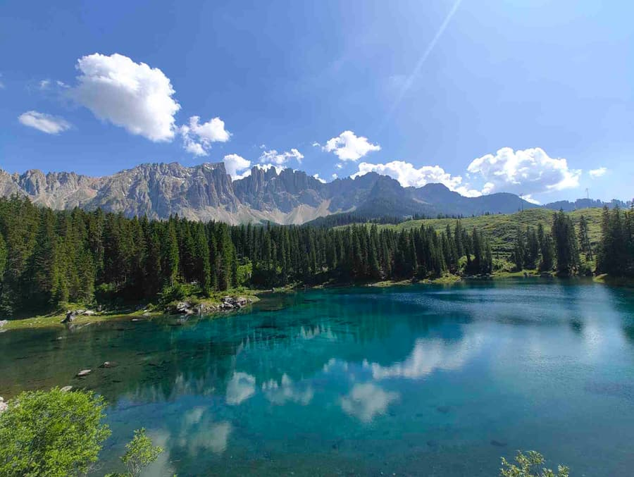

Ferieplan
Normale ferietider
1 uke
Høstferie i slutten av oktober
~2 uker
Juleferie fra desember til januar
1 uke
Vinterferie i slutten av februar (Pyrra!)
2 uker
"Vårferie" i april-mai. Tidspunkt varierer mye fra år til år
Sommer
Fra midten av juni til andre uke i september
1.-3. klasse slutter ofte andre uke i juni, mens 4. klasse slutter i slutten av mai for å starte internship. 4. klasse får også ferie til slutten av september (for å fullføre internship).